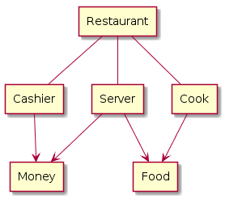

Database Systems
links
Network databases built on the foundation provided by hierarchical databases by adding additional flexibility.
Instead of always having a single parent, as in hierarchical databases,
network database entries can have more than one parent,
which effectively allows them to model more complex relationships.
When talking about network databases, it is important to realize that network is being
used to refer to connections between different data entries, not connections between different computers or software
